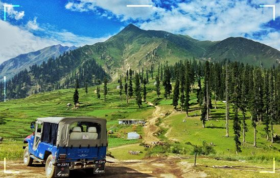

Pakistan's most beloved summer retreat — crystal-clear lakes, majestic waterfalls, lush green forests, and the magical Lake Saif-ul-Malook in Mansehra district.

=======Naran Kaghan Valley is a picturesque region in the Mansehra district of Khyber Pakhtunkhwa. The valley is known for its breathtaking scenery including lush green forests, crystal-clear lakes, majestic waterfalls, and towering snow-capped mountains. It offers a peaceful escape from the hustle and bustle of city life and is ideal for families, couples, and adventure seekers alike.
Hiking, trekking, camping, fishing, horse riding, and photography. The valley is ideal for families with children as well as serious trekkers heading to Ansoo Lake.
May to September is the ideal window. July and August are peak season. Snow starts melting in May revealing lush greenery. Monsoon rains (July–September) can occasionally disrupt travel, so plan ahead.
Family trips, honeymoons, or solo adventures — we have affordable packages for everyone. Book with us today!
Book Now